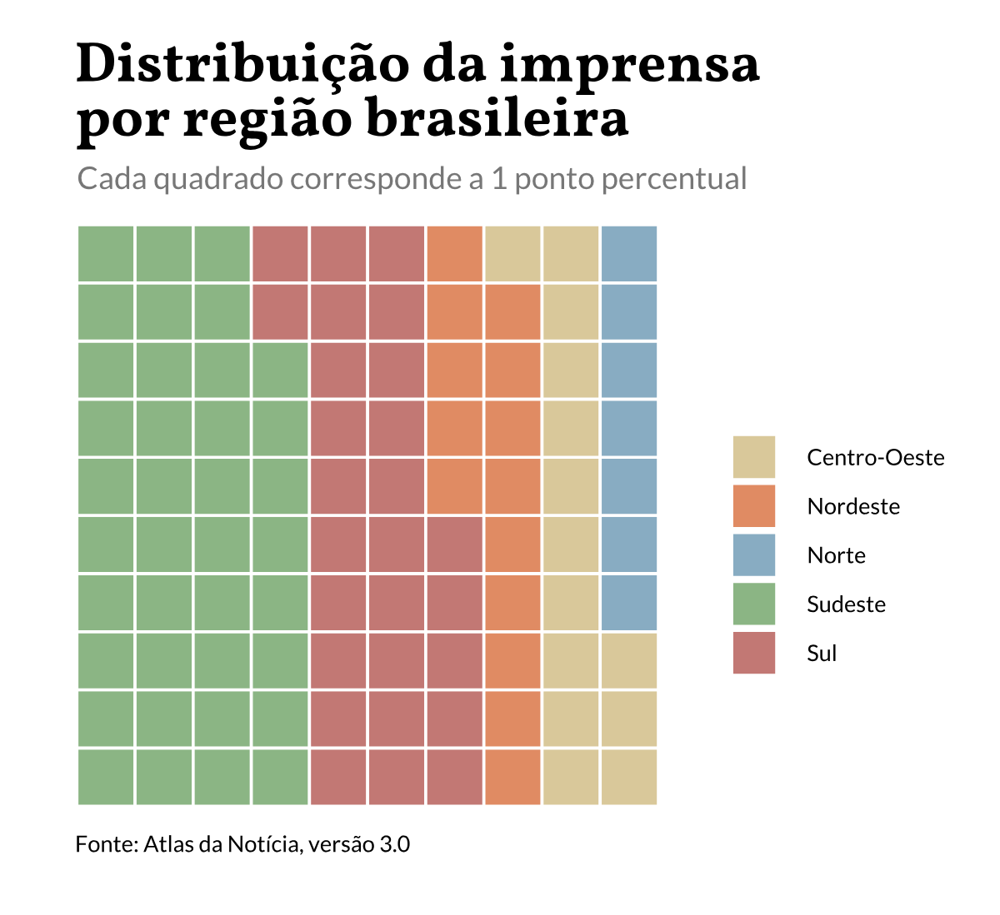

Atlas da Notícia
Mapeando o jornalismo local no Brasil
O Atlas da Notícia é uma iniciativa para mapear veículos produtores de conteúdo jornalístico – especialmente de jornalismo local – no território brasileiro.
Identificamos e mapeamos veículos que publicam, mesmo que só esparsamente, notícias de interesse público – sejam impressos ou digitais – e com periodicidade diária, semanal ou quinzenal. Estamos falando de produtores de notícias sobre a prefeitura e a câmara municipal e temas como contas públicas, saúde, educação, segurança, mobilidade e meio-ambiente.
O projeto é uma iniciativa do o Instituto para o Desenvolvimento do Jornalismo (Projor), mantenedor do Observatório da Imprensa, em parceria com Volt Data Lab.
O Atlas da Notícia é inspirado no projeto America’s Growing News Desert, da revista Columbia Journalism Review, que mapeou a presença de jornais nos Estados Unidos em meio às mudanças no modelo de negócios do jornalismo que levaram ao fechamento de diversos veículos.
A metododologia do projeto é baseada, principalmente, na contabilização de veículos de notícia no Brasil, seja através de pesquisa própria como de colaboração de terceiros.
A primeira edição do Atlas da Notícia foi publicada em novembro de 2017, com um recorte sobre jornais impressos e veículos online de notícias.
Principais dados do mapeamento do Atlas da Notícia
Os dados abaixo fazem parte da terceira edição do Atlas da Notícia (v.3.0). As informações coletadas aqui foram apuradas até 30 de novembro de 2019 por pesquisadores e voluntários em todas as regiões brasileiras.
Veículos totais mapeados
Considera iniciativas jornalísticas e que estejam em funcionamento
| versão atlas | veículos | % sobre ano anterior |
|---|---|---|
| v.1.0 | 11.829 | - |
| v.2.0 | 12.467 | 5,4% |
| v.3.0 | 13.732 | 10,1% |
Veículos por caráter jornalístico
Considera apenas veículos que estejam em funcionamento
| tipo | veículos | proporção |
|---|---|---|
| jornalísticos | 11.833 | 86% |
| não-jornalísticos | 1.899 | 14% |
Veículos fechados
Considera iniciativas jornalísticas ou não-jornalísticas que tenham encerrado atividades
| tipo | veículos | proporção |
|---|---|---|
| jornalísticos | 331 | 93,3% |
| não-jornalísticos | 10 | 4,4% |
Veículos por fonte
Considera iniciativas jornalísticas e não-jornalísticas que estejam em funcionamento
| fonte | veículos | proporção |
|---|---|---|
| MCTIC | 6.460 | 47% |
| Secom/PR | 4.164 | 30,3% |
| Atlas da Notícia | 2.613 | 19% |
| Adjori-RS | 193 | 1,4% |
| Adjori-SC | 128 | 0,9% |
| Central de Diários | 86 | 0,6% |
| Adjori-SP | 60 | 0,4% |
| Adjori-PR | 28 | 0,2% |
Veículos por região
Considera apenas iniciativas jornalísticas e que estejam em funcionamento
| região | veículos | proporção |
|---|---|---|
| Sudeste | 4.521 | 38% |
| Sul | 3.164 | 27% |
| Nordeste | 1.722 | 15% |
| Centro-Oeste | 1.612 | 14% |
| Norte | 814 | 7% |
Veículos por segmento
Considera apenas iniciativas jornalísticas e que estejam em funcionamento
| segmento | veículos | proporção |
|---|---|---|
| Rádio | 4.195 | 35,5% |
| Impresso | 3.429 | 29% |
| Online | 3.051 | 25,8% |
| Televisão | 1.158 | 9,8% |